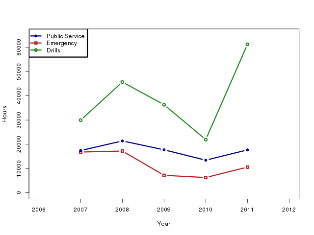
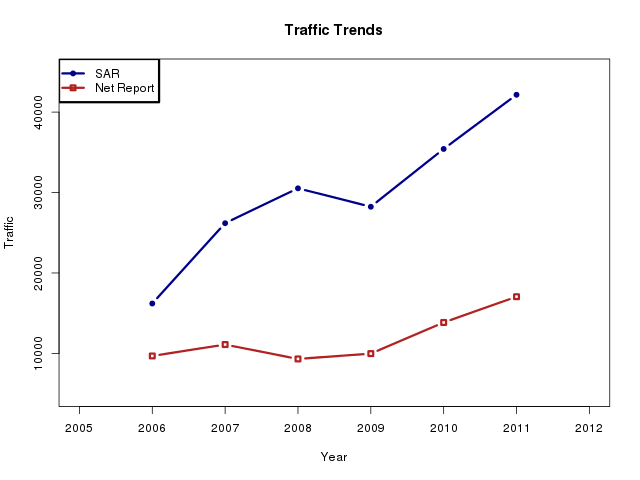

7. Year over year comparisons
It can be interesting to compare the current year to previous years, both to spot longer term trends as well as pick up causes of variations which may be used for improvements and remediation.
7.1. ARES
ARES hours across the emergency and public service categories are relatively flat. As might be expected, emergency hours tend to be higher in bad weather years. It is interesting that public service hours tend to track emergency hours; perhaps indicating that active years also lead to more reporting.
Active years also tend to show an increase in drills. Not only do active years encourage interest, but bad weather damages amateur radio infrastructure as well, and programs tend to hold drills to test newly repaired or installed equipment.
The spike in Drills for 2011 should not be a surprise. Both the New Madrid Aftermath exercise and the SET involved more effort and more amateurs than most previous drills.

FSD-212 Results
Figure 9. ARES hours by category
7.2. NTS
The number of checkins experienced by the nets in the section has remained relatively flat (notice that the entire Y axis only covers a range of about 25%). It is not clear what caused the depression of 2007-2008.
The drop for 2011 is probably somewhat permanent. The Wolverine Net had been an NTS affiliated traffic net. Over the years the traffic has dwindled, and last year that net asked to drop its affiliation with NTS, and along with it, their reporting. In addition, the Northern Lower Eastern Upper Peninsula net has been without leadership, and hence, without reporting.

Net Reports
Figure 10. Net Checkins
Traffic, however, has trended relentlessly upward. The steeper slope of traffic reported by individuals, as compared to that reported by nets, is probably due to two causes:
- KB8RCR has been actively encouraging reporting, especially individual reporting. The number of amateurs reporting their station activity has increased significantly over the past few years.
- More and more Michigan amateurs are becoming involved in Region and Area nets, and even in the Transcontinental Corps. These tend to be very high traffic stations, and much of their traffic does not appear on Michigan nets.

Traffic